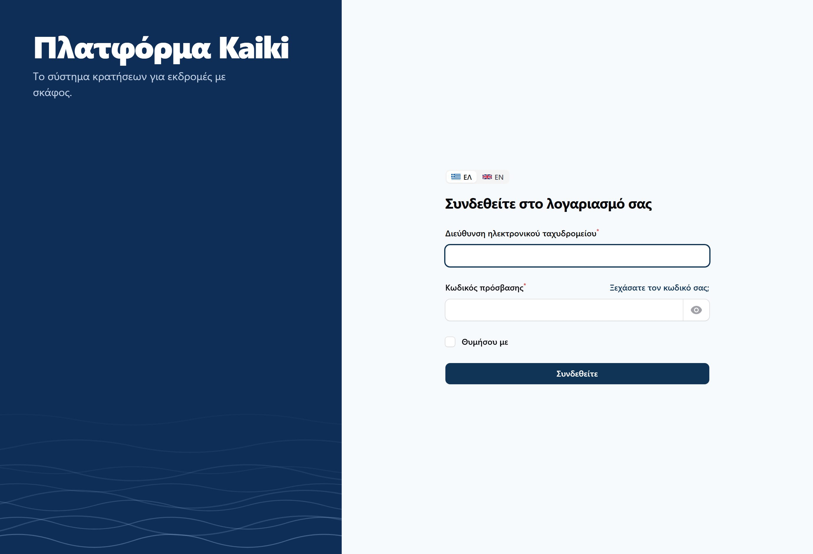
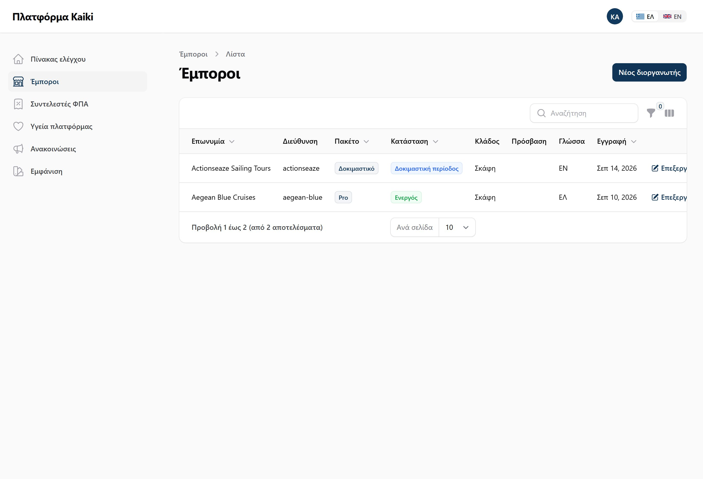
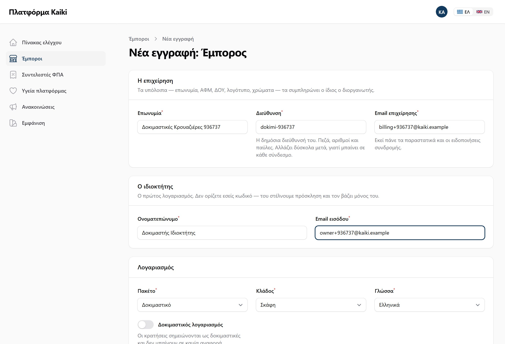
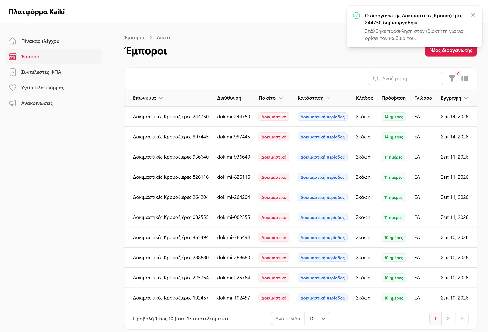
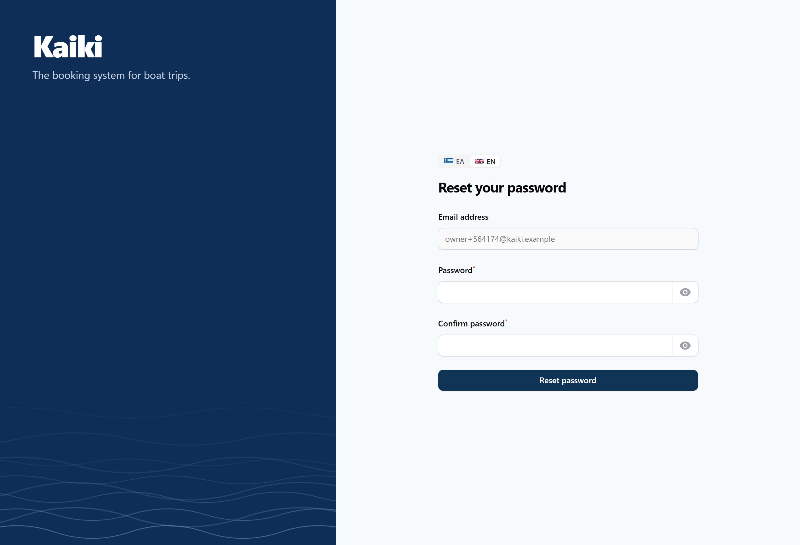
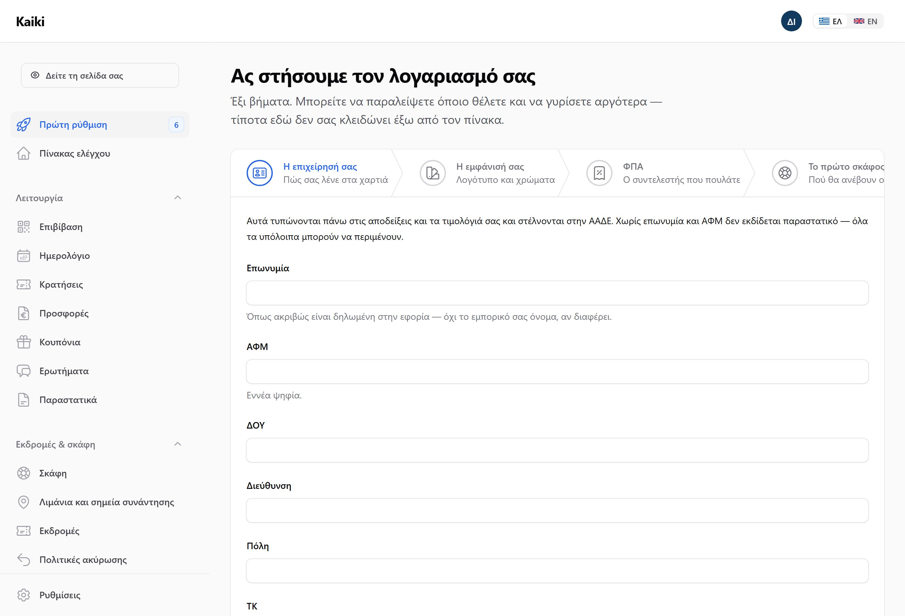
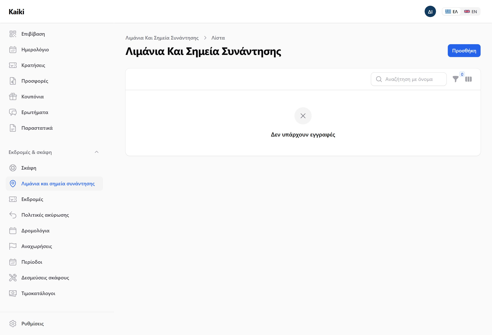
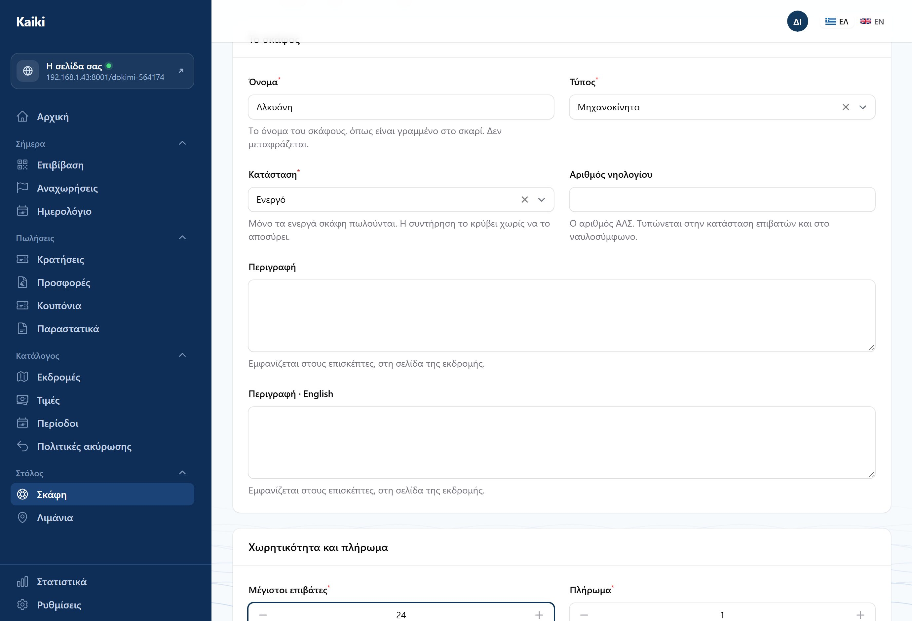
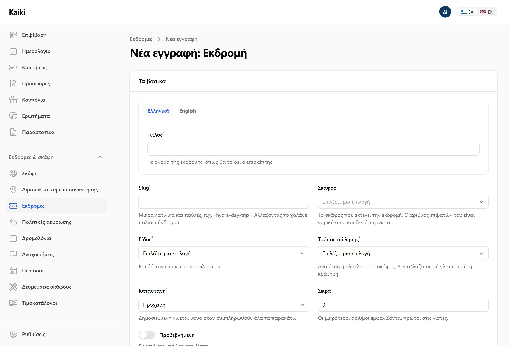

Kaiki
Πώς στήνεται ένα Kaiki που το ανοίγει όλη η ομάδα από το δίκτυο του γραφείου, και πώς φτιάχνουμε έναν καινούργιο διοργανωτή από το μηδέν και τον δουλεύουμε σαν να είμαστε εμείς.
Σεπτέμβριος 2026
Κάθε βήμα εδώ έχει εκτελεστεί. Οι εικόνες τραβήχτηκαν από πρόγραμμα που
περπάτησε αυτή ακριβώς τη διαδρομή, με τη σειρά.
Αν κάποιο βήμα σπάσει, το έγγραφο δεν χτίζεται.
Το μέρος Α το κάνει ένας άνθρωπος, μία φορά, στο μηχάνημα που θα φιλοξενήσει τις δοκιμές. Από το μέρος Β και μετά συμμετέχουν όλοι, ο καθένας από τον δικό του υπολογιστή — δεν χρειάζεται να εγκαταστήσει κανείς τίποτα.
Τρέχει σε έναν υπολογιστή γραφείου, με βάση δεδομένων SQLite και χωρίς αντίγραφα ασφαλείας. Σκοπός του είναι να βρούμε τι δεν δουλεύει. Μη βάλετε αληθινά δεδομένα πελατών — ούτε ονόματα, ούτε τηλέφωνα, ούτε αριθμούς διαβατηρίων.
Όλα τα μηνύματα που στέλνει το Kaiki πιάνονται από ένα εργαλείο στο ίδιο μηχάνημα και τα βλέπετε όλοι σε μια σελίδα. Αυτό είναι σκόπιμο: δοκιμάζετε με επινοημένες διευθύνσεις πελατών, και δεν θέλουμε να φύγει «η κράτησή σας επιβεβαιώθηκε» σε άγνωστο άνθρωπο.
Η κράτηση προχωράει μέχρι το ταμείο και σταματάει εκεί. Δεν χρειάζεται κάρτα και δεν κινείται χρήμα. Το πρόσθετο WordPress επίσης μένει έξω από αυτόν τον γύρο. Ό,τι άλλο υπάρχει, δοκιμάζεται κανονικά.
Ένας άνθρωπος, μία φορά, στο μηχάνημα που θα φιλοξενήσει τις δοκιμές. Οι υπόλοιποι δεν εγκαθιστούν τίποτα.
Windows, και τρία εργαλεία. Αν υπάρχουν ήδη, προσπεράστε στο επόμενο.
| Τι | Έκδοση | Πού |
|---|---|---|
| Git | οποιαδήποτε | git-scm.com |
| PHP | 8.4 ή νεότερη | windows.php.net — «Thread Safe», x64 |
| Node.js | 20 ή νεότερη | nodejs.org |
Με 8.3 δεν ξεκινάει τίποτα: ο έλεγχος εξαρτήσεων σταματάει με μήνυμα για την
έκδοση. Αν έχετε ήδη μια παλιότερη PHP στο μηχάνημα, δεν χρειάζεται να τη
βγάλετε — αρκεί οι εντολές να δείχνουν στη νέα. Σε αυτό το μηχάνημα η 8.4
βρίσκεται στο C:\Users\Mike\php84, και το script εκκίνησης το ξέρει.
Ανοίξτε ένα PowerShell — απλό, όχι διαχειριστή — και δώστε τα παρακάτω με τη σειρά. Η τρίτη εντολή αργεί δύο με τρία λεπτά την πρώτη φορά.
git clone https://github.com/mikmikfil/kaiki.git cd kaiki
Αν τον έχετε ήδη, αρκεί git pull μέσα στον φάκελο.
composer install npm install npm run build
Το npm run build φτιάχνει τα αρχεία εμφάνισης του πίνακα. Χωρίς
αυτό ο πίνακας ανοίγει αλλά δείχνει άστυλος.
copy .env.example .env php artisan key:generate
Βρείτε την πρώτα:
ipconfig | findstr IPv4
IPv4 Address. . . . . . . . . . . : 192.168.1.43
Ανοίξτε το αρχείο .env με σημειωματάριο και αλλάξτε
δύο γραμμές, βάζοντας τη δική σας διεύθυνση:
APP_URL=http://192.168.1.43:8000 KAIKI_HOSTED_HOST=192.168.1.43:8001
Στο ίδιο αρχείο, τρεις γραμμές ακόμη:
MAIL_MAILER=smtp MAIL_HOST=127.0.0.1 MAIL_PORT=1025
php artisan migrate:fresh --seed
Φτιάχνει δύο έτοιμους διοργανωτές με σκάφη, εκδρομές και κρατήσεις, ώστε να υπάρχει κάτι να κοιτάξετε από την πρώτη στιγμή. Τον δικό μας διοργανωτή θα τον φτιάξουμε από το μηδέν στο μέρος Γ.
Από github.com/axllent/mailpit/releases, το αρχείο
mailpit-windows-amd64.zip. Βγάλτε το mailpit.exe
και βάλτε το στον φάκελο tools\ μέσα στο kaiki.
Χωρίς αυτό οι συνάδελφοι δεν θα συνδεθούν, όσο σωστά κι αν τρέχουν όλα. Τα Windows μπλοκάρουν από προεπιλογή κάθε εισερχόμενη σύνδεση. Δεξί κλικ στο μενού έναρξης, «Terminal (Admin)», και μία φορά:
netsh advfirewall firewall add rule name="Kaiki panel 8000" dir=in action=allow protocol=TCP localport=8000 profile=private netsh advfirewall firewall add rule name="Kaiki guest 8001" dir=in action=allow protocol=TCP localport=8001 profile=private netsh advfirewall firewall add rule name="Kaiki email 8025" dir=in action=allow protocol=TCP localport=8025 profile=private
Το profile=private ανοίγει μόνο στο δίκτυο του γραφείου — όχι σε
δημόσιο WiFi.
Μία εντολή, από τον φάκελο kaiki. Ανοίγει πέντε παράθυρα.
powershell -ExecutionPolicy Bypass -File tools\start-testing.ps1
Τα πέντε είναι: ο πίνακας, οι σελίδες επισκεπτών, ο εργάτης ουράς,
ο χρονοπρογραμματιστής, και το εργαλείο email. Το script διαβάζει μόνο του τη
διεύθυνση του μηχανήματος και σας τη δείχνει, και προειδοποιεί αν ξεχάσατε το
.env ή το τείχος προστασίας.
Οι προσκλήσεις, οι επιβεβαιώσεις κρατήσεων και τα εισιτήρια δεν στέλνονται απευθείας — μπαίνουν σε ουρά. Χωρίς τον εργάτη κάθονται εκεί για πάντα και δεν εμφανίζεται κανένα μήνυμα σφάλματος πουθενά· απλώς δεν έρχεται ποτέ τίποτα. Σε αυτό το μηχάνημα είχαν μαζευτεί 175 εργασίες πριν το προσέξει κανείς. Αν κάτι «δεν έφτασε», κοιτάξτε πρώτα ότι αυτό το παράθυρο τρέχει.
Ανοίξτε στον φυλλομετρητή του ίδιου μηχανήματος τη διεύθυνση που σας έδειξε το script. Αν φορτώνει η σελίδα εισόδου, το μισό είναι έτοιμο· το άλλο μισό είναι να ανοίξει από άλλον υπολογιστή, που είναι το μέρος Β.
Τίποτα να εγκαταστήσει κανείς. Ένας φυλλομετρητής και τρεις διευθύνσεις — και το μηχάνημα του μέρους Α ανοιχτό.
Αντικαταστήστε το 192.168.1.43 με τη διεύθυνση που σας έδειξε το script
εκκίνησης. Θα αλλάξει αν το μηχάνημα ξανασυνδεθεί στο δίκτυο.
| Τι | Διεύθυνση | Ποιος τη χρειάζεται |
|---|---|---|
| Ο πίνακας | http://192.168.1.43:8000/app |
Ο διοργανωτής και η ομάδα του |
| Οι σελίδες επισκεπτών | http://192.168.1.43:8001/{slug} |
Όποιος παίζει τον πελάτη |
| Τα email | http://192.168.1.43:8025 |
Όλοι |
Η δοκιμαστική βάση έρχεται με έναν διοργανωτή που δουλεύει ήδη μια σεζόν, ώστε να
υπάρχει κάτι να δείτε πριν φτιάξετε τον δικό σας. Κωδικός σε όλους:
password.
| Λογαριασμός | Ρόλος | Πού μπαίνει |
|---|---|---|
maria@aegean-blue.example |
Ιδιοκτήτρια | /app |
giorgos@aegean-blue.example |
Διαχειριστής | /app |
nikos@aegean-blue.example |
Πλήρωμα | /app |
admin@kaiki.example |
Διαχειριστής πλατφόρμας | /admin |
Ο admin@kaiki.example μπαίνει στο /admin και παίρνει
403 στο /app. Η maria το αντίστροφο.
Δεν είναι σφάλμα: ο διαχειριστής της πλατφόρμας δεν ανήκει σε καμία επιχείρηση,
και ο διοργανωτής δεν βλέπει τους άλλους διοργανωτές. Αν δείτε αυτό το 403,
κοιτάξτε ποιος είναι συνδεδεμένος πριν το αναφέρετε.
Το πιο χρήσιμο πράγμα που μπορείτε να κάνετε στην πρώτη μισή ώρα: μπείτε με τους τρεις λογαριασμούς του ίδιου διοργανωτή, στη σειρά, και δείτε τι δεν βλέπει ο καθένας.
Αν κάποιος ρόλος βλέπει κάτι που δεν θα έπρεπε, αυτό είναι το πιο σοβαρό πράγμα που μπορείτε να βρείτε σε αυτόν τον γύρο. Σημειώστε το πρώτο.
Από εδώ και κάτω δεν κοιτάμε τα έτοιμα δεδομένα. Στήνουμε δική μας επιχείρηση από το μηδέν — που είναι ακριβώς αυτό που θα δει ο πρώτος πραγματικός πελάτης.
Ο διοργανωτής δεν εγγράφεται μόνος του. Τον ανοίγει η πλατφόρμα και στέλνει πρόσκληση στον ιδιοκτήτη.

admin@kaiki.example και password.

Πατήστε Νέος διοργανωτής. Η φόρμα ζητάει πέντε πράγματα και τίποτε άλλο.

| Πεδίο | Τι βάζουμε |
|---|---|
| Επωνυμία | Το όνομα της δοκιμαστικής επιχείρησης, π.χ. «Δοκιμαστικές Κρουαζιέρες» |
| Slug | Συμπληρώνεται μόνο του. Είναι η διεύθυνση της σελίδας — μικρά λατινικά και παύλες |
| Email χρέωσης | Της επιχείρησης. Δεν είναι λογαριασμός εισόδου |
| Ονοματεπώνυμο ιδιοκτήτη | Ποιος θα διοικεί |
| Email ιδιοκτήτη | Αυτό γίνεται ο λογαριασμός εισόδου. Πρέπει να είναι μοναδικό |
Ο λογαριασμός φτιάχνεται με έναν τυχαίο κωδικό που δεν βλέπει ποτέ κανείς, και ο ιδιοκτήτης ορίζει δικό του μέσα από σύνδεσμο. Ένας διαχειριστής που θα πληκτρολογούσε κωδικό θα έβαζε ένα λειτουργικό διαπιστευτήριο ξένης επιχείρησης σε ένα email και σε ένα τετράδιο.

Ανοίξτε http://192.168.1.43:8025 και θα τη δείτε — μαζί με κάθε άλλο
email που θα στείλει το Kaiki από εδώ και πέρα.
Αν βιάζεστε ή αν το email δεν έφτασε, υπάρχει εντολή που τυπώνει τον σύνδεσμο κατευθείαν. Από τον φάκελο kaiki, σε ένα PowerShell:
php artisan kaiki:invitation-link owner@example.com
Δοκιμαστής Ιδιοκτήτης — owner@example.com http://192.168.1.43:8000/app/password-reset/reset?token=...&email=...
Τότε το APP_URL δεν άλλαξε στο μέρος Α, βήμα 4. Ο σύνδεσμος θα
ανοίγει μόνο στο μηχάνημα που τον έφτιαξε και σε κανέναν άλλο. Διορθώστε το
.env, τρέξτε php artisan config:clear, και ζητήστε νέον
σύνδεσμο με την εντολή παραπάνω.
Από εδώ και πέρα είμαστε ο διοργανωτής. Ο λογαριασμός είναι άδειος — κανένα σκάφος, καμία εκδρομή, κανένας πελάτης.

Βάλτε κωδικό που θα θυμάστε — θα τον μοιραστείτε με την ομάδα. Για τις δοκιμές
προτείνουμε κάτι σαν kaiki-testing-2026.
Είναι μιας χρήσης και λήγει. Αν τον ανοίξετε δεύτερη φορά δεν θα δουλέψει, και αυτό είναι σωστό — δεν είναι σφάλμα να αναφέρετε. Ζητήστε καινούργιον με την εντολή του μέρους Γ, ή από το «Ξεχάσατε τον κωδικό σας;» στη σελίδα εισόδου.
Μόλις μπείτε, ανοίγει μόνος του. Είναι το πρώτο πράγμα που θα δει κάθε πραγματικός πελάτης, οπότε αξίζει να τον διαβάσετε σαν πελάτης και όχι σαν δοκιμαστής.

| Βήμα | Τι ζητάει | Γιατί |
|---|---|---|
| Η επιχείρησή σας | Επωνυμία, ΑΦΜ, ΔΟΥ, διεύθυνση | Τυπώνονται στα παραστατικά |
| Η εμφάνισή σας | Λογότυπο και χρώματα | Σας πάει στη δική της οθόνη |
| ΦΠΑ | Τον συντελεστή που πουλάτε συνήθως | Προσυμπληρώνεται σε κάθε νέα εκδρομή |
| Το πρώτο σκάφος | — | Σας πάει στην οθόνη σκαφών |
| Η πρώτη εκδρομή | — | Σας πάει στην οθόνη εκδρομών |
| Έτοιμοι | — | Πού είναι οι σελίδες σας |
Το βήμα του ΦΠΑ δεν σας λέει ποιον συντελεστή να διαλέξετε, επίτηδες: είναι απάντηση λογιστή, και ένα λάθος εκεί γίνεται λάθος πάνω σε παραστατικό. Αν δεν ξέρετε, παραλείψτε το.
Η σειρά έχει σημασία και δεν είναι αυθαίρετη: μια εκδρομή θέλει σκάφος, μια τιμή θέλει εκδρομή, μια αναχώρηση θέλει και τα δύο.

Βάλτε όνομα και διεύθυνση. Αν συμπληρώσετε συντεταγμένες, η σελίδα της εκδρομής δείχνει χάρτη· χωρίς αυτές δείχνει μόνο σύνδεσμο, που είναι καλύτερο από σπασμένο κουτί στο σημείο που λέει στον πελάτη πού να πάει.

Δύο πεδία κάνουν περισσότερα απ' όσα φαίνονται. Οι μέγιστοι επιβάτες είναι νόμιμο όριο και καμία κράτηση δεν το ξεπερνά, ούτε χειροκίνητη. Ο χρόνος προετοιμασίας είναι τα λεπτά που χρειάζεστε ανάμεσα σε δύο εκδρομές του ίδιου σκάφους — και το Kaiki δεν θα πουλήσει ποτέ δύο που πέφτουν μέσα σε αυτό το διάστημα.
Βάλτε 10 επιβάτες, κάντε αργότερα κράτηση για 8, και μετά προσπαθήστε να το κατεβάσετε σε 5. Πρέπει να αρνηθεί και να σας πει ποιες κρατήσεις το εμποδίζουν.

Η σημαντική απόφαση είναι ο τρόπος κράτησης, γιατί αλλάζει όλα τα υπόλοιπα:
| Τρόπος | Τι σημαίνει |
|---|---|
| Ανά θέση | Κοινή εκδρομή. Τιμή ανά ηλικία, και οι θέσεις μετρούν |
| Ολόκληρο το σκάφος | Ιδιωτική ναύλωση. Μία τιμή για το σκάφος |
| Κατόπιν ζήτησης | Δεν δείχνει τιμή. Ο πελάτης ζητάει, εσείς στέλνετε προσφορά |
Για την πρώτη σας εκδρομή διαλέξτε ανά θέση — είναι η διαδρομή που δοκιμάζει τα περισσότερα. Στις κατηγορίες ηλικίας αφήστε τουλάχιστον μία σημειωμένη ως βασική: είναι αυτή πάνω στην οποία υπολογίζονται οι υπόλοιπες.
Στο κάτω μέρος της οθόνης της εκδρομής, καρτέλα Τιμές. Δεν χρειάζεται να πάτε αλλού.
Πατήστε «Νέα τιμή» και αφήστε την περίοδο κενή. Αυτή ισχύει όποτε δεν ταιριάζει καμία περίοδος. Χωρίς αυτήν, η εκδρομή απλώς δεν πουλάει.
«Νέα τιμή» ξανά, και στο πεδίο περιόδου πατήστε το + για να φτιάξετε την περίοδο επιτόπου — όνομα, από, έως. Βάλτε μεγαλύτερη τιμή.
Στη σελίδα της εκδρομής, διαλέξτε ημερομηνία μέσα στο καλοκαίρι και μία έξω. Η τιμή πρέπει να αλλάζει.
Αν μια μέρα δεν πέφτει σε καμία περίοδο και δεν υπάρχει προεπιλεγμένη τιμή, η εκδρομή δεν πουλάει εκείνη τη μέρα — δεν βγάζει 0 €. Αν δείτε μηδενική τιμή κάπου, αναφέρετέ το.
Μια εκδρομή χωρίς αναχωρήσεις δεν αγοράζεται. Στα Δρομολόγια ορίστε κάτι σαν «κάθε Τρίτη και Πέμπτη στις 18:30», και το Kaiki παράγει τις αναχωρήσεις μόνο του.
Παράγονται από εργασία στην ουρά. Αν το παράθυρο του εργάτη ουράς δεν τρέχει, δεν θα εμφανιστεί καμία — και δεν θα υπάρξει μήνυμα σφάλματος πουθενά. Δώστε λίγα δευτερόλεπτα και ανανεώστε την οθόνη «Αναχωρήσεις».
Φτιάξτε μία με κλιμάκια — π.χ. «15 μέρες πριν: επιστροφή 100%, 3 μέρες πριν: 50%, μετά: τίποτα» — και βάλτε την στην εκδρομή. Θα τη χρειαστείτε στο μέρος Ζ, όταν ακυρώσουμε κράτηση και δούμε τι υπολογίζει.
Η εκδρομή έχει κατάσταση. Όσο είναι πρόχειρη δεν τη βλέπει κανείς. Στην οθόνη της υπάρχει λίστα ελέγχου με ό,τι λείπει πριν μπορέσετε να τη δημοσιεύσετε — αν κάτι από αυτά δεν βγάζει νόημα, αυτό είναι χρήσιμο εύρημα.
Ανοίξτε τη σελίδα σε άλλο παράθυρο — ιδιωτική περιήγηση, ή άλλο μηχάνημα. Ο επισκέπτης δεν είναι συνδεδεμένος, και το θέμα είναι να το δείτε όπως το βλέπει.
http://192.168.1.43:8001/to-slug-sas
Το slug είναι αυτό που δώσατε στο μέρος Γ. Υπάρχει και κουμπί «Δείτε τη σελίδα σας» πάνω αριστερά στον πίνακα, που πάει στο ίδιο μέρος.
Τα χρώματα και το λογότυπο που βάλατε στην «Εμφάνιση» πρέπει να είναι εδώ. Η μπάρα αναζήτησης λειτουργεί από την πρώτη μέρα.
Ημερομηνία και άτομα. Δείχνει μόνο ό,τι όντως μπορεί να κλειστεί, και με την τιμή της συγκεκριμένης παρέας — όχι «από …».
Φωτογραφίες, τι περιλαμβάνει, ο χάρτης του σημείου συνάντησης, οι συχνές ερωτήσεις, και το κουτί κράτησης δίπλα στον τίτλο.
Στο κουτί κράτησης. Πράσινο όπου υπάρχουν θέσεις, κόκκινο και διαγραμμένο όπου εξαντλήθηκαν, γκρι όπου δεν υπάρχει αναχώρηση. Δοκιμάστε να διαλέξετε κόκκινη μέρα.
Το κουτί ρωτάει δύο πράγματα: πότε, και πόσοι. Μετά σας πάει σε κανονική σελίδα ολοκλήρωσης, σε πλήρες πλάτος.
Εδώ βλέπετε ανάλυση τιμής και συμπληρώνετε στοιχεία για πρώτη φορά. Σταματήστε στο κουμπί πληρωμής — δεν δοκιμάζουμε πληρωμές.
Από τη στιγμή που περνάτε στην ολοκλήρωση, οι θέσεις δεσμεύονται προσωρινά. Δοκιμάστε το: ανοίξτε την ίδια αναχώρηση σε δεύτερο παράθυρο και δείτε ότι οι διαθέσιμες θέσεις έχουν μειωθεί. Αν εγκαταλείψετε, ελευθερώνονται μόνες τους.
Για να δείτε τι γίνεται μετά — επιβεβαίωση, εισιτήριο, επιβίβαση — δεν χρειάζεται κάρτα. Καταχωρήστε την κράτηση από τον πίνακα.
Στον πίνακα, Κρατήσεις → Καταχώρηση κράτησης από τηλέφωνο. Είναι ο ίδιος δρόμος που θα ακολουθούσε ένας διοργανωτής όταν του τηλεφωνούν, και παράγει πραγματική κράτηση με όλα όσα τη συνοδεύουν. Μετά σημειώστε την ως πληρωμένη με μετρητά.
Μόλις επιβεβαιωθεί, πηγαίνετε στο http://192.168.1.43:8025. Θα βρείτε
την επιβεβαίωση προς τον πελάτη — και το εισιτήριο με το QR.
Στο μενού της σελίδας σας υπάρχει «Επικοινωνία». Στείλτε μήνυμα σαν πελάτης. Δεν γίνεται email: καταχωρείται στα «Αιτήματα» του πίνακα, όπου έχει κατάσταση και κάποιον που το κλείνει. Αν το στείλετε από σελίδα εκδρομής, πρέπει να φτάνει με την εκδρομή δίπλα του.
Η κράτηση έγινε. Τώρα δουλεύουμε σαν διοργανωτής που έχει πελάτες — που είναι όπου περνάει ο περισσότερος χρόνος στην πραγματικότητα.
Με μία κράτηση μέσα, τα νούμερα αρχίζουν να λένε κάτι. Κάθε ένα γράφει από κάτω τι ακριβώς μετράει — αν κάποιο δεν βγάζει νόημα ή δεν συμφωνεί με ό,τι βλέπετε αλλού, αυτό είναι εύρημα.
Η κράτησή σας πρέπει να φαίνεται πάνω στο σκάφος, με ορατό το κενό προετοιμασίας γύρω της.
Από την αναχώρηση. Είναι το έγγραφο που διαβάζει το λιμεναρχείο. Αν βάλατε βρέφος, πρέπει να είναι μέσα παρότι δεν πιάνει θέση.
Ανοίξτε http://192.168.1.43:8000/app/check-in από τηλέφωνο στο
ίδιο δίκτυο. Δοκιμάστε να σαρώσετε το ίδιο εισιτήριο δύο φορές
— πρέπει να το πει καθαρά, όχι να βγάλει σφάλμα.
Ακυρώστε την κράτηση και δείτε τι υπολογίζει η πολιτική που φτιάξατε. Η επιστροφή βγαίνει από την πολιτική που ίσχυε όταν έγινε η κράτηση, όχι από τη σημερινή — δοκιμάστε να αλλάξετε την πολιτική μετά την κράτηση και δείτε ότι δεν αλλάζει το ποσό.
Ξεχωριστή διαδρομή. Πρέπει πρώτα να σας δείξει ποιος παίρνει τι πίσω, και μόνο μετά να στείλει. Τίποτα δεν ακυρώνεται μόνο του.
Φτιάξτε εκδρομή «κατόπιν ζήτησης», ζητήστε τιμή ως πελάτης, και στην κράτηση που θα εμφανιστεί πατήστε Δημιουργία προσφοράς. Συμπληρώστε γραμμές, στείλτε, και ανοίξτε τον σύνδεσμο σαν πελάτης.
Ρυθμίσεις → Ομάδα. Προσκαλέστε συνάδελφο ως
διαχειριστή και άλλον ως πλήρωμα. Η πρόσκληση φτάνει στο
:8025· ο καθένας ορίζει δικό του κωδικό και μπαίνει. Μετά
συγκρίνετε τι βλέπει.
Ο μηχανισμός τιμολόγησης είναι χτισμένος, αλλά η αποστολή στην ΑΑΔΕ χρειάζεται διαπιστευτήρια που δεν υπάρχουν ακόμη. Η οθόνη θα λέει «Κανένα παραστατικό». Δεν είναι σφάλμα — είναι η τίμια συμπεριφορά· τίποτα δεν πρέπει να μοιάζει καταχωρημένο στην εφορία ενώ δεν είναι.
Ρυθμίσεις → Τι πήγε στραβά. Μία λίστα με κάθε αποτυχία που μπορεί να δει διοργανωτής — email που δεν έφυγε, ειδοποίηση που δεν παραδόθηκε, συγχρονισμός που έσπασε — με κουμπί επανάληψης εκεί όπου η επανάληψη κάνει κάτι. Αν κάτι δεν δούλεψε στις δοκιμές σας, κοιτάξτε εδώ πριν το αναφέρετε: μπορεί να σας πει το γιατί.
Ο σκοπός αυτού του γύρου δεν είναι να επιβεβαιώσουμε ότι δουλεύει. Είναι να βρούμε πού δεν δουλεύει, όσο κοστίζει ακόμη λίγο να διορθωθεί.
| Δοκιμάζεται | Δεν δοκιμάζεται τώρα |
|---|---|
| Στήσιμο νέου διοργανωτή από το μηδέν | Πραγματικές πληρωμές με κάρτα |
| Σκάφη, εκδρομές, τιμές, δρομολόγια | Το πρόσθετο WordPress |
| Οι σελίδες επισκεπτών και η κράτηση | Αποστολή στην ΑΑΔΕ / myDATA |
| Πίνακας, ημερολόγιο, επιβίβαση, ακυρώσεις | SMS — κλειστά στην πρώτη φάση |
| Email, προσκλήσεις, ρόλοι | Ναυλοσύμφωνο ως επίσημο έγγραφο |
| Ελληνικά και Αγγλικά σε κάθε οθόνη | Αντοχή σε φόρτο |
Με τη σειρά. Τα πρώτα δύο είναι πιο σημαντικά από όλα τα υπόλοιπα μαζί.
Πλήρωμα που βλέπει τζίρο. Διοργανωτής που βλέπει δεδομένα άλλου διοργανωτή. Οτιδήποτε τέτοιο σταματάει τα πάντα.
Ο πίνακας λέει τρεις κρατήσεις και η λίστα δείχνει δύο. Η τιμή στη σελίδα διαφέρει από την τιμή στο ταμείο. Αυτά διαβρώνουν την εμπιστοσύνη σε όλα τα υπόλοιπα.
Πατήσατε και δεν συνέβη τίποτα. Email που δεν έφτασε. Αναχωρήσεις που δεν εμφανίστηκαν. Κοιτάξτε πρώτα ότι τρέχει ο εργάτης ουράς και μετά τα «Τι πήγε στραβά».
Αμετάφραστη λέξη, κακή διατύπωση, κείμενο που δεν χωράει. Δείτε και τις δύο γλώσσες — ο διακόπτης είναι πάνω δεξιά.
Ειδικά η επιβίβαση και ο πίνακας, που είναι οι δύο που διαβάζονται όρθιος στην προβλήτα.
Τέσσερα πράγματα, και αρκούν. Χωρίς αυτά ένα εύρημα κοστίζει περισσότερο να αναπαραχθεί απ' ό,τι να διορθωθεί.
| Ποιος ήσασταν | Ο λογαριασμός και ο ρόλος. «Ως πλήρωμα», «ως επισκέπτης χωρίς σύνδεση» |
| Τι κάνατε | Τα βήματα, με τη σειρά, μέχρι το σημείο |
| Τι περιμένατε | Και τι έγινε αντ' αυτού |
| Η διεύθυνση | Αντιγράψτε την από τη μπάρα. Και στιγμιότυπο, αν φαίνεται |
Αναφέρετέ το. «Μου φάνηκε περίεργο» είναι έγκυρο εύρημα και συχνά το πιο χρήσιμο — τα προφανή σφάλματα βρίσκονται ούτως ή άλλως, ενώ αυτό που μπερδεύει έναν άνθρωπο την πρώτη φορά δεν το βλέπει ποτέ όποιος έχει συνηθίσει την οθόνη.
Αν τα δεδομένα μπερδευτούν και θέλετε καθαρή βάση, από τον φάκελο kaiki:
php artisan migrate:fresh --seed
Κάθε διοργανωτή που φτιάξατε, κάθε κράτηση, κάθε λογαριασμό συναδέλφου. Θα χρειαστεί να ξαναπεράσετε από το μέρος Γ. Συνεννοηθείτε πρώτα — μπορεί κάποιος άλλος να είναι στη μέση κάποιας δοκιμής.
Ό,τι βρεθεί σε αυτόν τον γύρο διορθώνεται πριν στηθεί πραγματικός server. Αυτό είναι και ο λόγος που το κάνουμε τοπικά πρώτα: ένα εύρημα εδώ κοστίζει μια διόρθωση· το ίδιο εύρημα μπροστά σε πελάτη κοστίζει τον πελάτη.